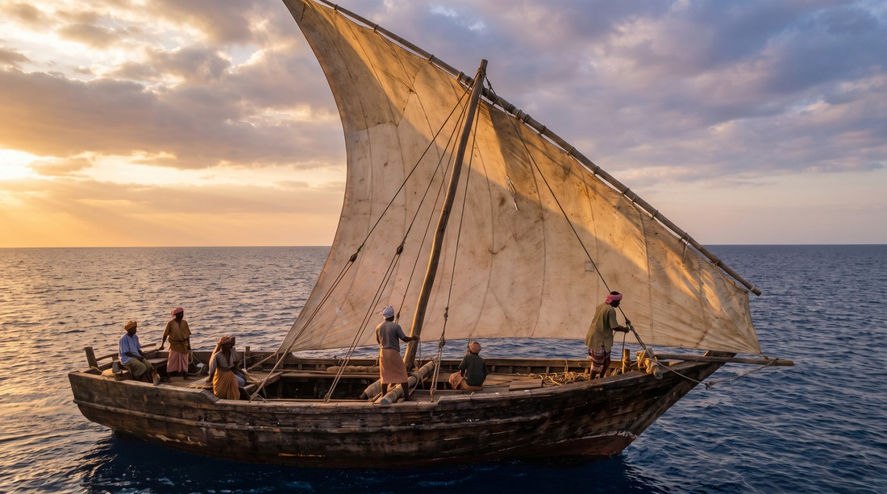
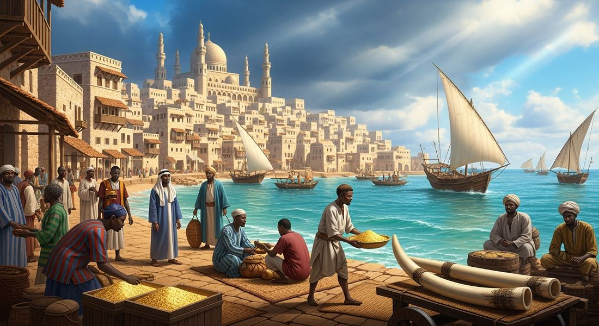
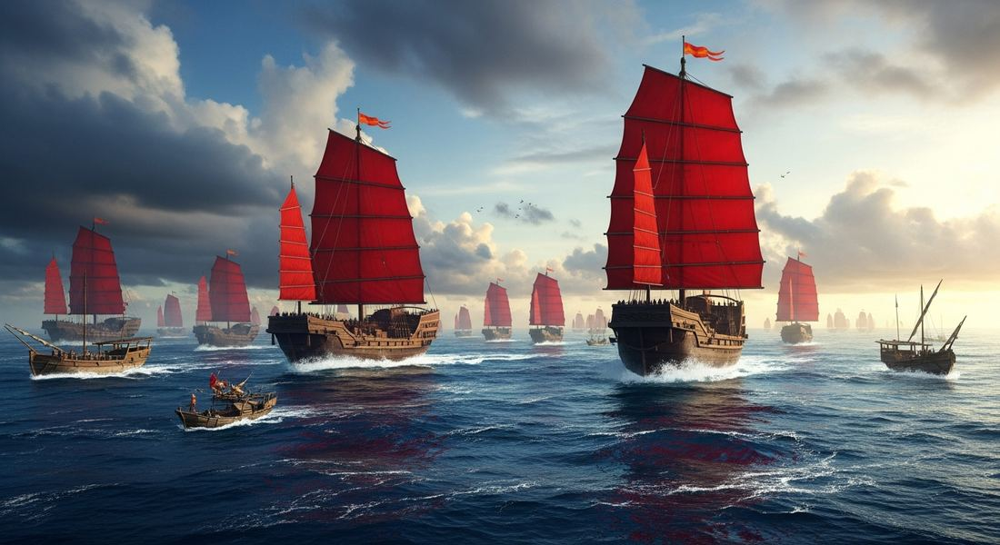

2.3 Exchange in the Indian Ocean
- LO-A: LO: Role of environmental factors, especially monsoons: The Indian Ocean's monsoon winds reverse direction twice annually: they blow southwest (April–September) enabling outbound voyages, then northeast (October–March) enabling the return. This created a natural, predictable trade calendar, merchants knew exactly when to depart and when to expect their counterpart to arrive. Without this predictability, round-trip planning, commercial financing, and reliable merchant relationships across the network would have been impossible. The monsoon was, in effect, a free and reliable engine that ran on a fixed schedule.
- LO-B: Explain the effects of expanded exchange on societies…: LO: Causes of Indian Ocean trade growth after 1200: The monsoon system provided the environmental foundation, but three other factors drove growth: (1) Technology, the magnetic compass (from China), astrolabe (Islamic world), and lateen-rigged dhow design made navigation more reliable and flexible; (2) Geography, port cities like Kilwa, Malacca, and Calicut controlled natural chokepoints and deep-water harbors, accumulating wealth by taxing the flow of trade; (3) Political decisions. Ming China's Zheng He voyages (1405–1433) expanded Chinese commercial and diplomatic reach across the Indian Ocean before the policy was abruptly reversed in 1433.
- LO-C: Explain the role of environmental factors, especially…: LO: Effects of expanded exchange on societies and cultures: Islam spread peacefully to East Africa and Southeast Asia through sustained merchant contact, rulers converted voluntarily for commercial and cultural reasons, not because they were conquered. Swahili culture emerged on the East African coast as a lasting hybrid of Bantu African and Arab Islamic traditions, new language, new architecture, new legal system. Permanent diaspora communities of Arab, Indian, and Chinese merchants settled in foreign port cities, creating the human infrastructure that made long-distance trade across cultural boundaries possible.
Try each question before revealing the answer.
1. Arab and Indian sailors had traded across parts of the Indian Ocean for centuries before 1200 CE. What specific environmental feature of the Indian Ocean made it uniquely suitable for predictable, profitable long-distance trade?
2. Swahili Coast city-states like Kilwa grew wealthy through Indian Ocean trade. How did their economic role compare to that of trading cities like Samarkand on the overland Silk Roads?
3. A historian argues that Zheng He's voyages (1405–1433) represent a "missed opportunity" for Chinese global expansion. Which of the following evidence most directly challenges this interpretation?
4. The Sultanate of Malacca, founded around 1400, rapidly became one of the wealthiest states in the Indian Ocean world. Which factor most directly explains Malacca's economic rise?
5. Arab, Indian, and Chinese merchant communities settled permanently in foreign port cities around the Indian Ocean between 1200 and 1450. What was the most significant long-term cultural consequence of these permanent diaspora settlements?
- Explain the causes of the growth of Indian Ocean trade networks after 1200
- Explain the effects of expanded exchange on societies and cultures
- Explain the role of environmental factors, especially monsoon winds, in Indian Ocean trade
Tap a term for its definition.
-
Definition: A traditional Arab sailing vessel with a triangular "lateen" sail. Significance: The main ship of Indian Ocean trade; the lateen sail allowed sailing at angles into the wind, making routes more flexible than earlier square-rigged vessels.
-
Definition: Seasonal winds over the Indian Ocean that reverse direction twice a year. Significance: Made reliable round-trip voyages possible on a predictable annual schedule, the environmental foundation of Indian Ocean trade growth.
-
Definition: An Islamic navigational instrument for measuring the angle of the sun or stars to determine latitude. Significance: Gave sailors reliable position data on open ocean, dramatically reducing the danger of long-distance voyages.
-
Definition: A Chinese invention that indicates magnetic north, allowing directional navigation regardless of weather or visibility. Significance: Made open-ocean sailing far less dangerous; a key technological cause of Indian Ocean trade expansion.
-
Definition: A group of people living outside their homeland who maintain ties to their culture of origin. Significance: Arab/Persian, Chinese, and Malay diasporic merchants permanently settled in foreign port cities, spreading Islam, Chinese culture, and Malay language while blending with local cultures.
-
Definition: A string of Islamic city-states along the East African coast (Kilwa, Mombasa, Sofala, etc.). Significance: Connected sub-Saharan Africa to Indian Ocean trade; spread Islam across East Africa; produced a blended Swahili language and culture from the meeting of African and Arab influences.
-
Definition: An Islamic trading state controlling the Strait of Malacca in Southeast Asia. Significance: Controlled the world's most valuable maritime chokepoint; at its peak hosted merchants speaking 80+ languages; spread Islam throughout Southeast Asia.
-
Definition: Chinese Muslim admiral who led seven massive treasure fleet voyages across the Indian Ocean (1405–1433). Significance: Demonstrated Ming China's maritime power; facilitated trade and cultural exchange; his voyages ended abruptly when a new emperor reversed the policy, showing how political decisions shape trade networks.
🌊 Why the Indian Ocean?
Look at a map of the world. The Indian Ocean sits at the center of the Eastern Hemisphere, touching Africa on the west, the Middle East and South Asia to the north, and Southeast Asia and China to the east. It is, in other words, the geographic crossroads of the most populated parts of the ancient world. If you wanted to connect all of these places, the Indian Ocean was the obvious highway.
But trade across the Indian Ocean didn't just happen automatically. It required technology, knowledge, and networks of trust built up over centuries. By 1200 CE, all three were in place, and a period of explosive trade growth was about to begin.

A traditional Arab dhow under sail, the workhorse of Indian Ocean trade. AI-generated illustration (Google Gemini, 2025), commercially licensed.
⚙️ New Technology, More Trade
Trade doesn't expand on its own. It expands when people develop tools that make longer, safer, more profitable voyages possible. Between roughly 1000 and 1400 CE, three key technologies transformed Indian Ocean commerce:
- The magnetic compass. Originally developed in China, the compass told sailors which direction was north even when there were no stars visible. Before the compass, sailing out of sight of land was terrifying. After it, navigating open ocean became something sailors could do confidently day or night, cloudy or clear.
- The astrolabe, An Islamic innovation that allowed sailors to calculate their latitude (how far north or south they were) by measuring the angle of the sun or stars. Combined with the compass, sailors could now determine both their direction and their position, essentially giving them GPS without any electronics.
- Larger ship designs. Chinese junks and Arab dhows were both redesigned during this period to carry dramatically more cargo. Junks used multiple masts and watertight compartments for safety. Dhows used a triangular "lateen" sail that could catch wind from multiple angles, making them highly maneuverable.
🏙️ Cities Born from Trade
When trade routes expand, cities grow wherever traders stop to rest, resupply, exchange goods, and pay taxes. The Indian Ocean network produced a string of powerful trading cities that became some of the most cosmopolitan places on Earth.

Swahili Coast city-states like Kilwa and Mombasa were built from coral stone and grew wealthy by controlling the flow of gold, ivory, and enslaved people from the African interior to Indian Ocean traders. Image credit not specified.
Three city-states and trading ports the College Board specifically names:
- Swahili Coast city-states (East Africa), A series of city-states, including Kilwa, Mombasa, and Sofala, stretched along the East African coast from present-day Somalia to Mozambique. Built from coral stone and connected by sea, these cities grew wealthy by acting as middlemen: buying gold, ivory, and enslaved people from the African interior and selling them to Arab and Persian merchants who arrived by ship. The word "Swahili" itself comes from the Arabic word for "coast", a sign of how deeply Arab traders influenced the culture.
- Gujarat (western India), A region on India's northwest coast, Gujarat became one of the Indian Ocean's most important hubs. Indian merchants from Gujarat traded cotton textiles across the entire ocean network, west to East Africa and the Middle East, east to Southeast Asia. Gujarat merchants were known for their sophisticated banking and credit systems, which helped make long-distance trade more practical.
- Sultanate of Malacca (Southeast Asia). Located on a narrow strait between the Malay Peninsula and the island of Sumatra, Malacca controlled one of the most strategic chokepoints in the world. Every ship sailing between the Indian Ocean and the South China Sea had to pass through the Strait of Malacca. The sultans of Malacca got rich collecting tolls and taxes. At its peak, Malacca's port hosted merchants speaking over 80 different languages, making it one of the most diverse cities on Earth.
🌬️ The Secret Engine: Monsoon Winds
Here's what made the Indian Ocean unique compared to other bodies of water: it has predictable, reversible winds, the monsoons.
Every year, like clockwork, the winds over the Indian Ocean shift direction. From roughly April to September, the summer monsoon blows from southwest to northeast, pushing ships from East Africa and Arabia toward India and Southeast Asia. From October to March, the winter monsoon reverses, blowing from northeast to southwest, pushing ships back the other way.
This was extraordinary. Sailors didn't have to fight the wind. They just had to time their journeys correctly. Depart East Africa in April, ride the summer monsoon to India. Load up with Indian spices and textiles. Wait for October. Ride the winter monsoon home. The same journey that might take years of unpredictable struggle in the Atlantic could be done in the Indian Ocean on a reliable seasonal schedule.
🌍 Merchants Far from Home. Diasporic Communities
When merchants travel to foreign lands repeatedly, some of them stop going home. They settle permanently, marry local people, raise children, and create communities that blend their home culture with the local one. These are called diasporic communities, populations living outside their homeland who maintain connections to their culture of origin.
The Indian Ocean network produced three major diasporic communities the College Board wants you to know:
- Arab and Persian communities in East Africa. Arab and Persian merchants had been trading along the East African coast for centuries. Over time, many settled permanently in Swahili Coast cities. The result was a blended culture, the Swahili language is a mix of Bantu African languages and Arabic, and Swahili architecture reflects both African and Islamic traditions. Islam spread along this route, and East African city-states became part of the broader Islamic world.
- Chinese merchant communities in Southeast Asia. Chinese merchants, particularly from Fujian province, established permanent communities across Southeast Asia, in present-day Vietnam, Thailand, Malaysia, Indonesia, and the Philippines. These communities maintained Chinese cultural traditions (language, religion, food, festivals) while adapting to local conditions. Their descendants, sometimes called "overseas Chinese", remain a significant presence in Southeast Asia today.
- Malay communities across the Indian Ocean basin. Malay sailors and merchants from the islands of Southeast Asia were some of the most skilled navigators in the Indian Ocean. Malay communities spread westward to Madagascar (off the coast of Africa) and eastward across the Pacific. The Malagasy language spoken in Madagascar today is closely related to languages spoken in Borneo, a stunning example of how far Malay maritime culture reached.
⛵ Zheng He, When an Empire Goes to Sea

Zheng He's treasure ships dwarfed anything sailing in the Indian Ocean at the time. The largest were over 400 feet long, roughly four times the length of Columbus's Santa María. Image credit not specified.
In 1405, the Ming Dynasty of China launched something the world had never seen: a fleet of enormous ships, commanded by an admiral named Zheng He, sailing across the Indian Ocean not to conquer, but to display power, establish trade relationships, and collect tribute.
Between 1405 and 1433, Zheng He led seven voyages. His fleet at its peak included over 300 ships and 28,000 crew members, far larger than anything Europe would put to sea for another century. The treasure ships themselves were over 400 feet long; for comparison, Columbus's Santa María was about 85 feet. Zheng He visited the Swahili Coast of East Africa, the Persian Gulf, India, Southeast Asia, and dozens of ports in between.
What did the voyages accomplish? They demonstrated Chinese power across the Indian Ocean world, strengthened trade relationships, and facilitated the transfer of goods, animals, and ideas. Giraffes were brought back to China from East Africa as exotic gifts. Diplomatic envoys from as far as Africa came to Beijing to pay respect to the emperor.
Then, in 1433, the voyages stopped. A new emperor came to power who viewed the expeditions as wasteful and un-Confucian. China turned inward. The fleet was dismantled. The records were burned. One of history's greatest maritime programs ended almost overnight, a striking reminder that political decisions can reverse even the most ambitious undertakings.
These videos will help you review Exchange in the Indian Ocean and solidify key concepts before your exam.
- A) Why Indian Ocean trade was dominated by Arab merchants rather than by Chinese or Indian ones
- B) Why Indian Ocean trade routes developed into reliable, predictable networks that could support regular scheduled commerce
- C) Why dhow sailing technology was superior to the junks used by Chinese merchants
- D) Why the Indian Ocean network was commercially more important than the overland Silk Roads
- A) The cost of maintaining such a large fleet was the sole reason China ended the voyages in 1433
- B) The Ming Emperor intended Zheng He's voyages as the beginning of a Chinese commercial empire in the Indian Ocean
- C) Zheng He's voyages were primarily military expeditions designed to conquer Indian Ocean port cities
- D) China possessed the most advanced maritime technology in the world during the early 15th century
- A) Arab culture replaced Bantu African culture on the East African coast as a result of Arab military conquest
- B) Arabic became the dominant language of East Africa because of the political power of Arab merchants over local rulers
- C) Sustained commercial contact between different cultures produces lasting hybrid cultures that blend elements from both parent traditions
- D) The Swahili people abandoned their African cultural traditions in order to participate in Indian Ocean trade
- A) Malacca's rapid accumulation of wealth through taxing all maritime trade passing between the Indian Ocean and South China Sea
- B) Malacca's capacity to build a powerful military that could dominate Indian Ocean trade by force
- C) Malacca's ability to produce large quantities of spices that it sold throughout the Indian Ocean world
- D) Malacca's ability to attract diplomatic recognition and commercial partnership from Ming Dynasty China
- A) The predominance of Arab merchants as the primary trading group in the Indian Ocean before European arrival
- B) The traditional exchange of goods among multiple parties across the Indian Ocean world
- C) The seasonal nature of Indian Ocean commerce driven by monsoon wind patterns
- D) The pattern of trade based on mutual commercial exchange rather than monopolistic control enforced by military violence
Answer all three parts (A, B, C). Write your response before clicking to see sample answers.
Part A
Identify ONE environmental factor that enabled the growth of Indian Ocean trade networks in the period 1200–1450.
Part B
Explain ONE way Indian Ocean trade networks contributed to cultural change in the period 1200–1450.
Part C
Explain ONE way that Ming Dynasty government decisions shaped Indian Ocean trade in the period 1200–1450.
Write a thesis before revealing. A strong thesis: restates the prompt's verb phrase, adds a quantifier ("to a great/significant extent"), and ends with because [A] and [B], where A and B are your two body paragraph arguments, not specific pieces of evidence.